Your table has a goblin in it now.
Every command, what it does, and how the pieces fit together.
Getting Started
Invite the bot, register a campaign, and let it build you a table.
Install Table Goblin Opens Discord's own invite screen. Pick your server and it's added with every permission below already ticked.
What the bot asks for, and why
Table Goblin needs the permissions below. Use the Install Table Goblin link above and they're all granted for you; if you add the bot some other way, tick them on its role yourself. Each one is load-bearing:
| Permission | What breaks without it |
|---|---|
| Manage Roles | It can't create your campaign's two roles, so nobody can be granted access to anything. |
| Manage Channels | No category, no channels, no permission model — setup_channels does nothing. |
| Manage Webhooks | Characters can't speak. Every in-character post goes out through a webhook so it wears the character's name and portrait. |
| Manage Messages | Your pc::{strike} trigger stays in the channel instead of being tidied away after the character's post goes up. |
| Manage Threads, Create Public Threads, Send Messages in Threads | The in-character forum can't be built or posted in. Discord also refuses to give players thread permissions the bot doesn't hold itself. |
| View Channels, Send Messages, Read Message History, Add Reactions, Embed Links, Attach Files | The everyday basics — it can't see, post, or attach maps and sheets without them. |
| Connect, Speak, Use Voice Activity | Only needed so the campaign's voice channel can be set up with the right permissions. |
Missing one? /tgm setup_channels checks before it builds anything and tells you exactly which permissions to enable on the bot's role (Server Settings → Roles), so nothing is left half-created.
Re-inviting wipes registered commands. If you re-authorise the bot and the slash commands vanish, that's expected — they come back when the bot next starts up. Give it a moment, then refresh Discord.
Two commands to a working table
system lists Pathfinder 2e only for now; the field exists so more can join it later. It then opens your campaign's rules panel, and says so, so the private message isn't a surprise./tgm command that takes a campaign name, because the campaign has no channels yet to identify it by.What it builds
include_voice to get one. Members can speak in it; nobody outside the campaign can see it.
The two roles
| Role | Granted by | What it allows |
|---|---|---|
TG-<campaign>-GM | /tgm add_gm | Everything a member can do, plus managing the campaign's channels, messages and threads. |
TG-<campaign>-Members | /tgm add_player | View, post, reply in forum threads, react, attach files, use the bot, and speak in voice. |
Neither role carries a single server-wide permission. Everything is granted on the campaign's
category, so a role can never confer anything outside its own campaign — and with
@everyone denied on that category, nobody sees the campaign at all without one of them.
Prefer your own channels? That works too.
The category is a convenience, not a requirement. Any channel inside the campaign's category belongs to that campaign automatically — drop a new one in and it works immediately, no binding needed.
If you'd rather use channels you already have, skip setup_channels and bind them
by hand. Binding is how you tell the bot which channel plays which role — where the
map posts, which one is GM-private:
Commands work inside forum threads because the thread's parent category resolves even though the thread's own id is bound to nothing. That's the main reason the category matters.
Discord cannot convert a text channel into a forum. If you're upgrading an older campaign, repair_campaign add_ic_forum:true creates a new forum and leaves your old IC channel in place with its history intact, simply unbound. Delete it yourself when you're ready.
GM Tools
Everything under /tgm — and every one of them is gated.
Every /tgm command needs a campaign GM or a Server Administrator, and every one
except campaign_create must be run from inside that campaign's own channels.
The channel is how the bot knows which campaign you mean, which is why none
of them takes a campaign name you could point somewhere else.
People
GM narration persona
gm:: chat trigger, the same way an NPC has one. Run it with no arguments to see what's currently set. One persona per campaign, shared by every GM at the table, not one per person.Table settings
/tge environment.Campaign rules
/tgm campaign_rules opens a private panel — dropdowns and buttons, not a wall of
arguments — holding everything about how your table plays. Nothing is saved until you
press Save, and only the GM who opened it can touch it.
campaign_create, and is there whenever you want to change your mind.Optional rules
Tick the ones your table uses. The character builder and level-up follow them from the start, so a player builds the right character the first time rather than patching it afterwards.
| Rule | What the bot does with it |
|---|---|
| Free Archetype | An archetype feat at every even level. Nothing to pick at 1st — the builder says so, and the first one (a dedication) arrives at 2nd through /tgchar levelup. |
| Ancestry Paragon | A second 1st-level ancestry feat in the builder, then another at every odd level. |
| Skill Paragon | Adds a Paragon Skill step: the character is trained in it (or trains something else if they already were). At 3rd, 7th and 15th an extra increase for that skill is applied for you, and every common general feat requiring it is granted as they qualify. |
| Dual Class | Adds a Second Class step. The character gets both classes' features and specialisations, a class feat from each class that grants one at 1st, both key attribute boosts, the higher Hit Points, the better proficiencies, and both spellcastings if both classes cast. |
Uncommon and rare
Common is always available. Uncommon and rare are two switches, both off to begin with — which is stricter than it sounds, since only 8 of the game's 50 ancestries are common. Turn on what your table allows.
Then there are ancestry exceptions: two dropdowns, one for the 20 uncommon ancestries and one for the 22 rare ones. An exception flips the switch for that one ancestry. With rare off, ticking Poppet makes Poppet available; with rare on, ticking Poppet takes it away. An ancestry you allow brings all its heritages and ancestry feats with it whatever their own rarity — and the panel tells you exactly how many uncommon or rare ones that means before you save.
Everything else follows the two switches. Backgrounds, heritages outside an allowed ancestry, feats, spells and items. Unique content is never offered at all — that is a GM handing it over by name.
Treasure tables
Both of these roll on PF2e's own 40 per-level treasure tables — with their real dice and weightings, so commoner results stay commoner.
rune given together with weapon/armor applies directly to it for free; given alone it's granted as a loose rune, free for the player to apply themselves later via /tgchar weapon edit/armor edit's own "own it already" discount./tgchar starting_gear below.Characters
Build a character without leaving Discord, or bring one in from Pathbuilder.
Building a character
Premium soon. The character builder and battle maps will become premium features. They are free while we test them.
/tgchar build walks you through ancestry, heritage, background, class, boosts,
skills and feats, one dropdown at a time, saving as it goes. A companion or familiar a class or feat grants gets
its own name-and-species step right there in the wizard, not a separate command afterward. A background that asks you
something — which skill (Hermit), which feat (Professional Letter Writer), a skill that decides the feat (Martial Disciple:
Acrobatics brings Cat Fall, Athletics brings Quick Jump), an energy resistance (Energy Scarred), or a ranged weapon you treat as one
category simpler (Student of Archery) — asks it right on the background step, each option showing what it grants. Anything that grants
alchemical formulas gets a Formulas step with a dropdown per source — an Alchemist, a hobgoblin's Alchemical Scholar, an Investigator's
Alchemical Sciences, or a background that grants Alchemical Crafting. A new character finishes with real starting wealth (15gp) and a searchable
shopping-cart vendor for common starting gear, opened automatically right after creation — 7 specialist vendors (Melee Weapons, Ranged Weapons, Armor, Shields,
Adventuring Gear, Alchemical, Scrolls). The top line shows what you're actually trained in, grouped by rank, and each weapon/armor result is flagged
⚠️ Not proficient if you aren't trained in it yet (shields have no proficiency of their own to check) — each result also shows real stats
(a weapon's damage die/category/group/traits, armor's AC/Dex cap/Str/type, a shield's AC/Hardness/HP) rather than just its price. Search each vendor, add matches to a cart,
remove one with the cart's own "Remove an item" dropdown if you change your mind, and check out once at the end.
Ammunition is sold, priced, and tracked in packs of 10 (real Core Rulebook pricing) — each click is one pack, and the cart spells out the real round count.
assist_me makes the wizard visible to the whole table instead of just you, for a GM walking a new player through their first build. What you are offered follows the campaign's rules (/tgm campaign_rules) — common always, uncommon and rare where your GM allows them, and whichever optional rules your table runs add their own steps./tgm starting_gear for a real re-do./tgchar build name:Manyjurr alias:manyjurr
A brand-new character, visible only to you.
/tgchar build name:Manyjurr alias:manyjurr assist_me:true
The same build, shown to the whole table — for a GM walking a new player through it.
Three steps of the real builder.
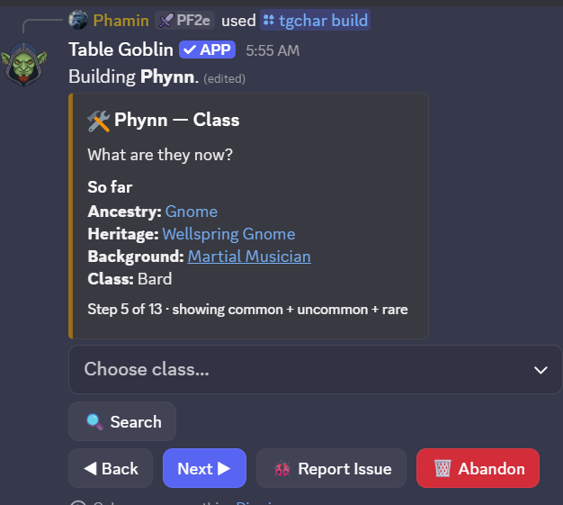
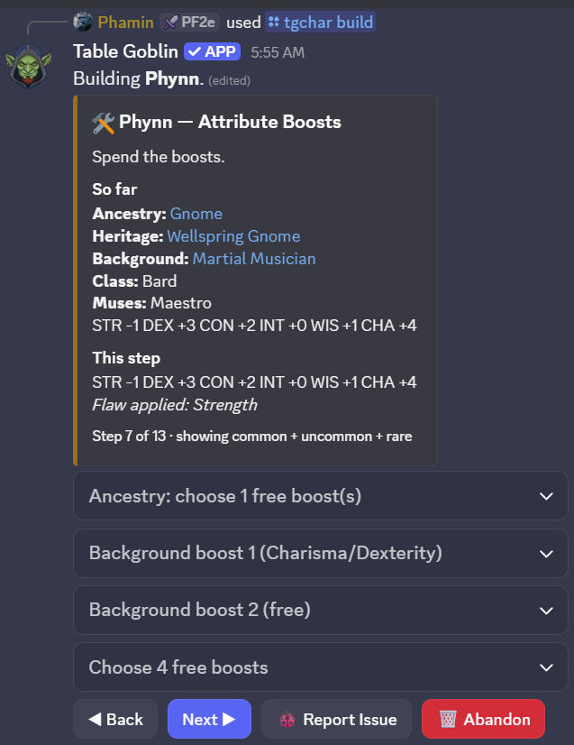
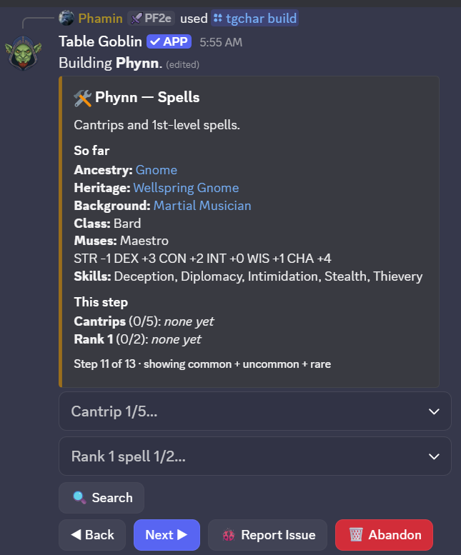
A build resumes exactly where you left off. Run /tgchar build again with the same name and alias and it picks the draft back up — nothing is lost to a closed laptop or a bot restart.
A feat that grants an innate cantrip asks for it on the spot. Roughly 60 ancestry feats and heritages work this way — Open Mind lets a Kashrishi cast any occult cantrip, Arcane Tattoos lets a Human pick from seven named schools, Oracular Samsaran asks a tradition first and then a cantrip from it. Picking one immediately asks its own follow-up right there in the same step, the same way Assurance already asks for a skill.
Deity: type the name, pick the rest. A Cleric or Champion types their deity's name (✍️ Deity name) and picks what the deity decides from plain lists — the favored weapon (🔍 to search every base weapon, plus Fist, Claw and the other unarmed favorites), the divine skill (you become trained in it) and sanctification (the button cycles None → Holy → Unholy). A Cloistered Cleric also picks Domain Initiate's domain from all 64. The bot never lists deities. A Cleric then gets a Deity Spells step: 📖 Deities on AoN links out to look yours up; a real deity's exact name can ✨ fill its spells in, otherwise pick a rank, a tradition and the spell (one per rank, most deities add three). Each joins your known spells once you can cast its rank. Forge-Blessed Dwarf asks which of its seven spells on the heritage step.
Signature spells (Bard, Oracle, Psychic, Sorcerer, Summoner). From 3rd level, once you've chosen your spells the Spells step asks for one signature spell per rank — cast freely heightened, with its lower ranks too. A 1st- or 2nd-level build has none yet (the rules give them at 3rd). Reset signature picks starts over.
Non-spell ancestry choices work the same way. Kobold's Draconic Benefactor — one shared choice of 40 dragons, made once no matter which of its 3 feats you take first — sets your breath weapon's real damage type, shape and save, plus a matching resistance. A damage-type resistance pick and an unarmed-strike-form pick (claws, jaws, tails, and more) both ask inline the same way. /tgchar ancestry_choice re-asks any of these for a character built before this shipped, or to change a pick later.
Surki get one extra step: Magiphage. Every Surki's own automatic ancestry feature picks which tradition (arcane/divine/occult/primal) all of their spells and magical actions use — asked right after ancestry, since a Surki feat like Sequestered Spell depends on the answer. Yaoguai, Anadi and Kitsune builds also get a real, trackable shapeshift form — see /tgchar shape below.
Importing and exporting
Already have a sheet? Bring a Pathbuilder character in, or move one between tables with Table Goblin's own export.
pathbuilder_id and the whole sheet imports immediately. The alias is the short handle you'll use in every other command and in chat — keep it short and typeable.pathbuilder_id. Table Goblin export: attach a file from /tgchar export to bring that whole character, companions and all, into this campaign./tgchar import source:Table Goblin export — handy for moving a character between tables. A file edited after export can only be imported by the GM.Companions come along. Pass companion_name/companion_alias or eidolon_name/eidolon_alias at creation and they're linked to the character. An eidolon always displays its summoner's HP, because that's whose hit points it actually spends.
Companions, eidolons, familiars, constructs, and followers
A companion or familiar a class or feat grants during /tgchar build gets its own
step right in the wizard — nothing further to run. Adding one to a character built another
way, or one imported from Pathbuilder without companion_name/eidolon_name
at creation, uses /tgcompanion instead.
Animal Companion or Eidolon attaches a bare stub directly here (needs companion_alias/companion_name). Familiar, Construct, Follower, or Hireling instead points you at that kind's own one-step command below — Discord can't collect each kind's different follow-up fields in a single command, so add just routes you there.add: Strength- or Dexterity-based, and the shape of both unarmed attacks. Applies immediately — no separate sync needed.An Eidolon is a two-step setup; everything else isn't. add creates the Eidolon stub and reads its family from the Eidolon subclass you already picked, then set_eidolon configures it. set_familiar, set_construct, set_follower, and set_hireling each create and configure in one call.
The sheet
/tgchar sheet opens an interactive sheet with five tabs — Overview, Combat,
Spellbook, Gear, Companions — the Overview shows your background and deity at a glance. Only you see it and only you can click anything — pass
show_all:true to post it visibly for the whole table instead.
Rolling happens through dropdowns rather than more commands. The Combat tab has skills, saves and strikes (plus a separate dropdown for companion attacks). Spells are shown and cast heightened to their slot's rank (cantrips and focus spells to half your level) — more damage, area or targets, from each spell's own heightened entries; the (heightened) target count is applied, and an effect that asks you something at cast time prompts you privately. A lasting effect goes on the creature the spell targets (the ally you cast Heroism on, the foe Ray of Frost crits), as its attack or save allows; cast with nobody named, you're asked who it affected. A spell that costs 1 to 3 actions (Force Barrage) is listed once per action count, and rolls what the extra actions add. Bards, Oracles, Psychics, Sorcerers and Summoners pick a signature spell per rank from 3rd level, castable heightened from any higher slot. A Sorcerer's bloodline adds its granted spells and bloodline focus spells on its own (Draconic, Elemental and Genie are asked their exemplar / element / type), and casting a bloodline spell offers its Blood Magic, applied for real. The Spellbook tab lets you pick a rank and then a spell — casting consumes the correct slot automatically, applies any lasting buff or debuff, and attaches an Uncast button for a mis-click.
Four tabs of the real sheet.
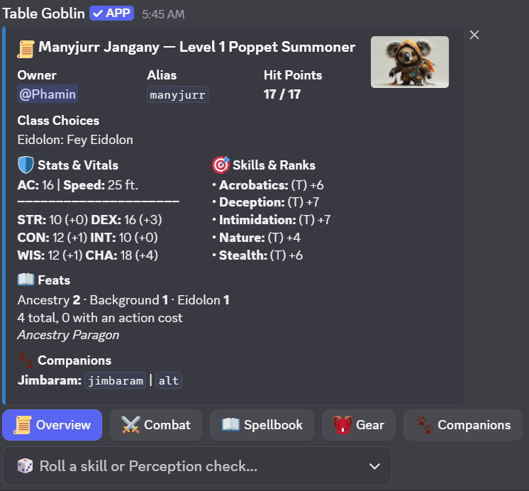
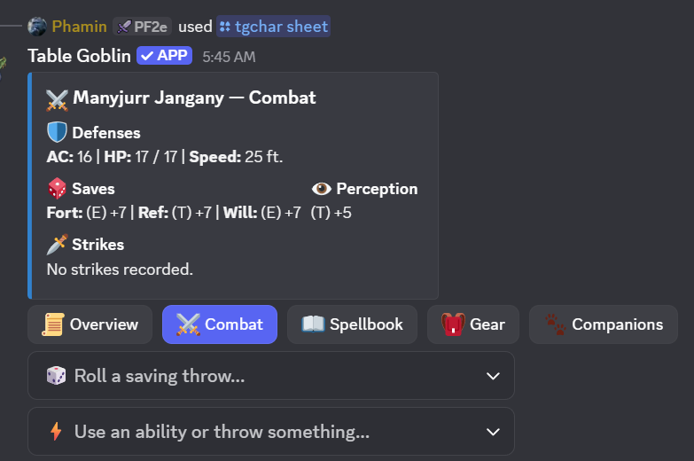
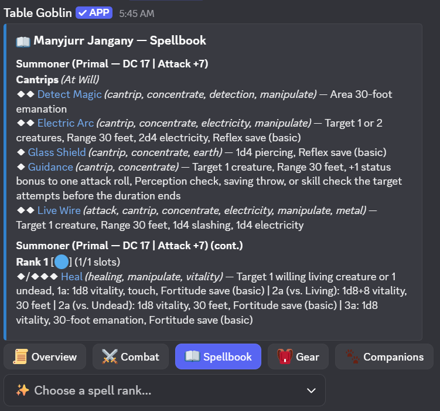
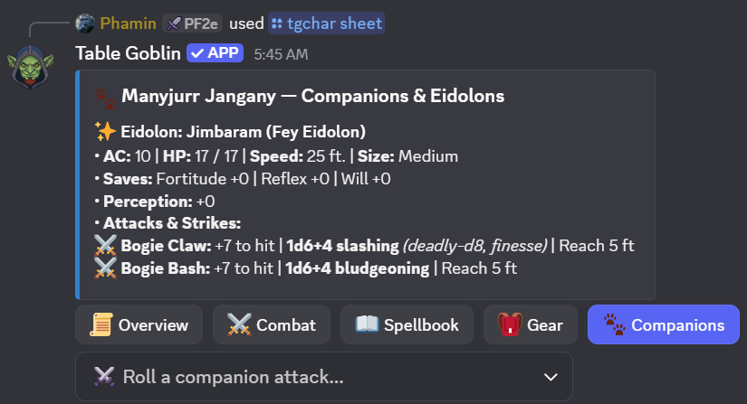
Using, investing and giving gear
The sheet's Gear tab has three buttons. Use Item spends a consumable from your pack and asks who it is for —
you, or anyone in the encounter (the party outside one). Its activation is posted as your character, a stated healing roll is added to the
target's Hit Points, and the item's effect goes on their sheet: an Antidote's bonus against poison, an Eagle Eye Elixir's Perception, temporary Hit Points.
What the bot can't read is listed as not tracked so you can apply it by hand. {item} does the same from chat, as a dropdown or
{item: healing potion}.
Invest invests or divests a magic item, up to ten (✨ marks them). Only invested items give their bonuses: a Cloak of Elvenkind adds to Stealth while it is invested, and Handwraps of Mighty Blows apply their runes only then. An item in the pack gives nothing.
Stow moves loose gear into a container you carry (a backpack, satchel, haversack, sack...) or back onto your person. The Gear tab's Bulk line totals what you carry: encumbered above 5 + your Strength modifier (Clumsy 1 and −10 feet to all Speeds, applied for you), and 10 + your Strength modifier is the most you can carry. A container holds only what its capacity allows, and the first 2 Bulk in a backpack don't count against you. Getting something out of a pack takes two Interact actions (take the pack off, take it out) before the action to use it, which the bot says when you use it.
Talismans aren't used, they're affixed: pick one in Use Item (or {item}) and choose which of your
weapons, armor or shields it goes on — only gear the talisman fits is offered. Affixing takes ten minutes and a repair toolkit;
if nobody in the party has one, the bot says so and refuses, and a toolkit someone else carries counts. A second talisman on the same item
deactivates them all, so it asks first: affix anyway, or swap the old one back into your pack. The Gear tab shows what is on each item.
Give, or {give} / {give: 3 rations} in chat, hands loose gear to another character in your party.
Weapons and armor on the sheet go through the GM.
Coin
Imported from Pathbuilder once, then it's yours. PF2e coinage is decimal, so the bot keeps your purse in the shape you're holding it — adding 5 sp to 3 sp gives you 8 sp, not 0.8 gp. It only breaks a purse down when it has to, which is exactly the moment a real table would make change.
50gp, 2gp 5sp, 3 silver. Don't put a sign on it — the command name already says which way it goes.The rest
pc:: and bare commands mean.sync./tgchar was already full.keep_runes:True to let them go with it). sell:True credits half the item's real value instead of just discarding it — fundamental runes always count toward that, a property rune only if you kept it on./tgchar weapon edit) to refresh the same strike in place. Every character also always has a "Fist" strike (1d4 bludgeoning, agile, finesse, nonlethal, unarmed) with no setup needed — this command is only for weapons.remove deletes the Strike outright without touching any linked weapon in inventory.choice autocompletes to whatever's actually still open; Kobold's Draconic Benefactor shows once regardless of which of its 3 feats you hold."" to clear it./tgm break overnight offers them again. Archetype casters are asked too: a Bard or Beast Gunner repertoire, a Necromancer's dirge and a Hedge Mage's keepsake fill first, then a prepared archetype prepares its slots./tgretrain) or something the GM handles.update takes an expression like str_score=18 for a manual correction, and those corrections survive a sync.Playing in Character
The bit that stops feeling like using a bot.
You don't have to run a command to act. Type a prefix straight into any of the campaign's channels and Table Goblin posts as your character, through the same webhook the sheet uses. The dice logic is identical either way — there's no separate "chat version" of a roll.
<prefix>::["message"]{action} npc::<Display Name>::["message"]{action}
| You type | What happens |
|---|---|
pc:: I stand my ground. | Speech, posted as your active character. |
pc::{strike} | A narrative default, plus a dropdown to pick the strike and a target. |
pc::"grins and swings"{strike} | Your own narration, then the same dropdown. |
alt2::{cast} | The same, but as your second companion. |
npc::Old Man Withers::"You'll regret that."{strike} | A GM narrating an NPC by its real name. |
gm::"The door creaks open..." | Narration as the campaign's own GM persona (set with /tgm persona). |
Prefixes
| Prefix | Resolves to |
|---|---|
pc | Your active character. |
alt / alt2 / alt3 | Its 1st / 2nd / 3rd companion. An eidolon is always alt. |
companion · eidolon · familiar | That specific companion type. |
| any alias you own | That character directly, whatever's active. |
npc::<Name>:: | GM only — voices any creature in the campaign. |
gm | GM only — the campaign's own narration persona, set up with /tgm persona. |
Your trigger message is tidied away once the character's post goes up, so the channel reads as fiction rather than as commands. A rejected attempt is left alone so you can see and fix it.
Typo in what you said? Right-click your post, choose Apps → Edit post, fix the text and save — within 10 minutes, and only the person who typed it can. Your speech and narration lines are editable; roll results never are, so a strike's outcome and damage stay exactly as rolled. Discord marks the post “(edited)”.
Nothing happened? Chat triggers only work in a campaign's own channels, and stay completely silent anywhere else — even for a perfectly formed pc::{strike}. Because any word:: counts as a candidate, the bot has to stay out of ordinary server conversation entirely. Also: {strike} and {cast} need a live encounter in that channel, since the target list comes from the roster.
What it looks like
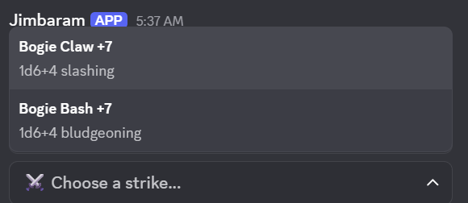
pc::{strike} and pick the strike. It's rolled as your character.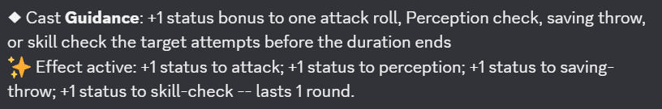
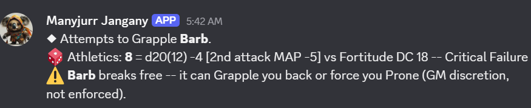
Maneuvers, grip and the action list
{action} opens a dropdown of everything your character can do beyond a plain Strike or spell, sorted A–Z with your starred favourites first. Once that list is longer than one page it
becomes category-first — pick a category (each shows its count), then the action, with a ◀ All categories entry
to back out. The sheet's Combat tab uses the same list.
Everyone has a Skill Actions category: Trip, Grapple, Shove, Disarm, Reposition, Escape, Demoralize and Change Grip, plus Feint once you're trained in Deception.
A Fighter who took Combat Grab gets that too — it is its own action (a Strike that grabs on a hit), not a Grapple by another name.
Apart from Feint, untrained characters may attempt any of them: the remastered rules list no training requirement.
Your favourites come first: an action you starred (☆ Favourite on a /tgcheck result, or on the private “✅ … used.” note after using one from this dropdown) is listed at the top, marked ⭐, here and on the Combat tab — above the categories once the list is grouped.
| Action | What it asks, and what it does |
|---|---|
| Trip · Shove · Disarm · Grapple | A target. Athletics against the right defense, with the effect applied on the result. Each one is an attack: it takes and adds to your multiple attack penalty. |
| Escape | The DC of what holds you and which statistic to use (Athletics, Acrobatics or an unarmed Strike). Success frees you; a critical success also lets you Stride 5 ft; a critical failure locks Escape until your next turn. Also an attack. |
| Combat Grab | A melee Strike keeping a hand free. On a hit the target is Grabbed until the end of your next turn. |
| Change Grip | Tell the bot what is in your hands: empty, one hand on a weapon, both hands, a weapon and a shield, or a weapon in each hand. |
Why Change Grip exists. Trip, Shove, Disarm, Grapple and Combat Grab need a free hand, and the bot can't know what is in each hand until you say, so it asks you. It is opt-in: until you set a grip, nothing is warned. Once you have, a maneuver with no hand free tells you so instead of rolling — tick The hand is free anyway to override it. A weapon with the maneuver's own trait (a trip weapon can Trip, and so on) works with no hand free, and an agile one takes the smaller multiple attack penalty.
Creatures & NPCs
An official creature from the bestiary, or one you made up.
You need something to fight before you can run a fight. Everything here is GM-only — creature stat blocks are the GM's to know.
target_level (and a tier) and it also suggests the Building Creatures numbers for that level, with an Apply suggested stats button that sets level, HP, AC, Perception, saves and every Strike's attack and damage for you, and the matching /tgnpc edit line to paste if you'd rather type it.sheet replies privately — the whole point of hiding creature HP from players would be lost otherwise./tgnpc add offers the tag with one click — it's never applied without you.Encounters
Initiative, conditions, and the rules that run themselves.
add_party pulls in every PC and their companions automatically. add_enemies takes your creatures' aliases, comma-separated (goblin1, goblin2, boss), so a whole fight can be written ahead of time and pasted in; only how many joined is shown to the table, and anything that didn't match is reported to you alone. Set loot:true and the fight pays out when it ends.side is Party, Enemy or Neutral; creatures default to Enemy and characters to Party./tge init sets a value by hand; /tge tiebreak settles a clash.duration picks how long it lasts (end of turn, end of next turn, minutes, while a spell is sustained, until dismissed); choose Remove it with the same type and kind to take one off again.affliction searches every poison and disease item and every affliction in the bestiaries. The bot rolls the save and, if it fails, tracks the stages (below). dc overrides the listed DC.cure ends one early (Treat Poison, a cure, a counteracted curse) and removes its conditions; list shows what a creature has and its stage./tgm environment) — the ambush in the swamp while the party is travelling through plains. Pick Use the campaign's environment to go back.Poisons, diseases and curses
Afflictions run themselves. A creature hit by a venomous Strike (a giant centipede's mandibles) or by a poisoned
round is exposed: it rolls the save, and on a failure lands on stage 1 (stage 2 on a critical failure), after
any onset. Each stage's damage is dealt and its conditions applied. Whenever a stage's interval passes —
counted at the end of that creature's turns — it saves again: a success lowers the stage (a critical
success by two), a failure raises it; stage 0 ends it, and so does the maximum duration. Diseases that move a
day at a time save during /tgm break overnight. A character's current afflictions and stages are on
the sheet's Combat tab, and each turn's saves appear in the turn message.
Critical hits: Deadly and Fatal
A Deadly weapon adds its deadly die on a critical hit (two with greater striking, three with major), and a Fatal weapon's dice become the fatal size on a critical hit, plus one more fatal die — both rolled for you and shown in the damage line.
From initiative to the first move.
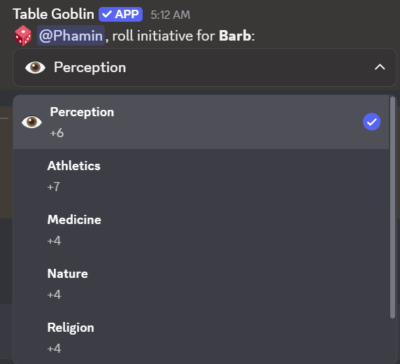
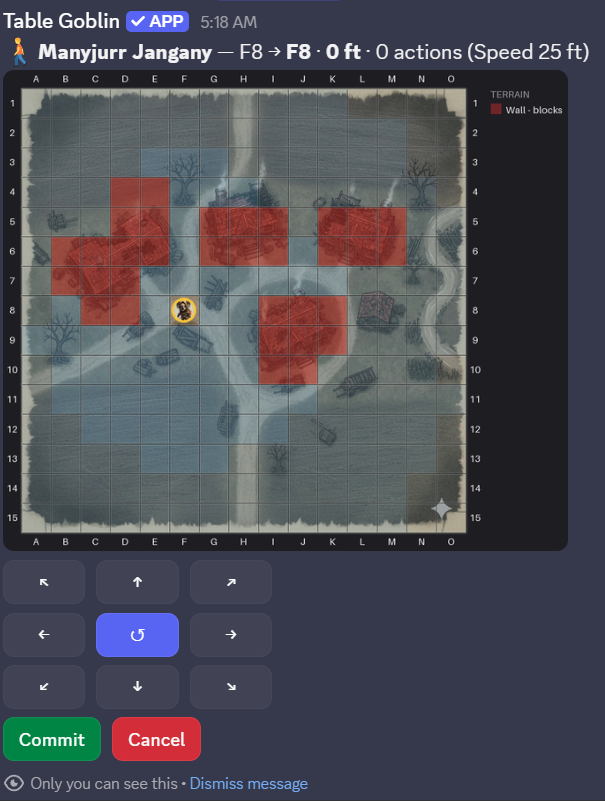
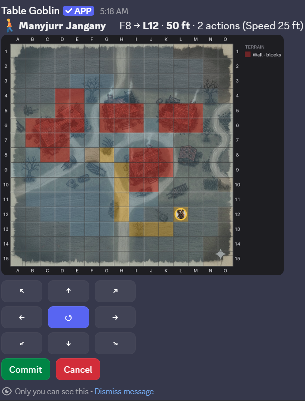
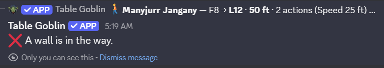
Thralls & summons
Both create temporary creatures: they join the encounter, land on the map,
and are swept away by /tge end. Aliases keep counting up within a fight — if
thrall2 dies in round one, round two raises thrall3 and
thrall4.
Casting does the placing. When you cast Create Thrall or a summon spell from the sheet during a fight on a map, the bot
asks where it goes right away: Place next to me (the nearest free cell around your token), or Pick a cell. A summon spell also asks
which creature answers, from the list its rank allows. Manifest Eidolon puts your eidolon on the nearest free cell by you with no question.
None of them get a turn of their own: they share yours. /tge thralls and /tge summon below still do the same thing by hand.
place:N18, M21, O25 raises three. Each is a level −1 creature with 1 HP and Speed 15 ft, striking at the Necromancer's spell attack for 1d6 (2d6 at 5th, another d6 every 4 levels after). Every check a thrall makes fails automatically; every check against it succeeds.Some creatures share a multiple attack penalty. A thrall's strikes count toward its Necromancer's, and an eidolon's toward its summoner's. A companion that is mounted shares its rider's, in both directions, because you and your mount fight as a unit; one that isn't mounted keeps its own. The bot keeps those shared counters for you. The rank you cast at sets the creature level ceiling: rank 1 calls level −1, rank 5 calls level 5, rank 9 calls level 13.
Mounts & vehicles
Riding is a plain Core Rulebook rule, not an archetype perk — any willing,
size-qualified character can be someone's mount. /tgmount set only
designates who's riding whom; the actual climb-on/off each round is the universal
Mount or Dismount action in {action}'s dropdown (or the sheet's Combat
tab), which drags the two tokens together and spends the real action.
rider to target — leave target blank to clear the link. Either side's own controller, or the GM, can set or clear it.A vehicle works the same way, but for a crew instead of one rider: it's created once and keeps its own HP and occupants from one session to the next, the way a party's own ship would. Exactly one pilot; any number of crew (manning weapon mounts, aiding checks) and passengers (just along for the ride) — a character holds at most one of the three at a time.
vehicle_type autocompletes to a real stat block — AC, Hardness, HP, Speed, and its own collision and piloting DCs all come from there, not from anything typed in by hand.
Once someone's piloting, Drive and Run Over show up in
{action} for anyone aboard — real core actions, no archetype needed.
A Trick Driver's own feats (Drive-By Attack, Power Slide, Express Driver)
show up the same way once they've taken them, substituting Driving Lore for the usual
piloting check.
Hazards
A trap or hazard doesn't join the roster like a creature — it attacks or forces saves directly.
Reaction alerts
When someone acts in a way that can trigger a reaction — a manipulate or move action, a ranged attack, a concentrate action, or leaving a square — the bot checks who in the encounter could answer it and tells them. It only announces: nothing is spent or rolled, and whoever holds the reaction still uses it themselves.
| Whose reaction | Who is told, and where |
|---|---|
| A player character | Posted in the encounter channel, mentioning the player and the campaign's GMs. |
| An NPC or creature | Posted to the GM-private channel only — the table never learns what a monster can do. |
It knows Reactive Strike (the Fighter's, the shared class feat — Barbarian at 6th and several more classes — and a creature's own), Stand Still, Disrupt Prey, Not So Fast!, Reflexive Courage, Eidolon's Retort, Bone Burst and Implement's Interruption, each listening only for the triggers its own text names (Stand Still and Not So Fast! care about movement only). With a battle map it also measures reach — from where a mover started — and stays quiet for anyone out of it; without one the alert says the reach is unchecked. Someone who has already used their reaction this round isn't alerted.
Two things it can't see. A Step triggers none of the movement reactions but looks like a 5-foot Stride, so every alert for movement says so. And conditions with no state behind them — a ranger's hunted prey, a thaumaturge's Exploit Vulnerability target, a necromancer's thralls — are shown in the alert for you to check.
{reaction} resolves one, right from chat: a dropdown of only the reactions above that you actually hold, kept separate from {action}'s own much longer list of everything else you can do. {reaction: stand still} (or any of their names) runs that one directly. Reactive Strike and Implement's Interruption also keep their original dedicated words ({reactivestrike}, {interrupt}) — {reaction} is a second way to reach the same roll, not a replacement for them.
A roll for anything else
Not every DC in the game has a feat or command of its own behind it — a locked door's
Thievery, a rumor's Society check. /tgcheck rolls any named skill (or Perception,
or a specific Lore) against a DC you give it, using the same rank-based modifier every other
roll in this bot computes.
action names what the check is for — Climb, Swim, Lie, Aid, Sense Motive and so on (the list follows the skill you picked). Your feats that help with that action apply automatically: Sure Feet turns a successful Climb into a critical success, for example. The result then has a ☆ Favourite button: starred actions are listed first, with a star, the next time you pick one — and they also appear in your character sheet's skill dropdown, rolled with the skill they suit best. The sheet's Overview also has a Situational toggles menu listing the toggles your feats have (Tail Spin "using your tail", Risky Surgery, Staff Acrobat "wielding your staff"): tick what's true right now and the feat applies until you untick it. Give either a dc or a target: pick a creature in the encounter and its own defense is the DC (Reflex for Trip, Fortitude for Shove, Will for Demoralize, Perception for a Lie or a Feint). Trip, Shove, Grapple, Disarm, Reposition, Tumble Through, Demoralize and Feint against a target run the full action — the multiple attack penalty, Prone or Grabbed applied, and any follow-up buttons. secret:true posts the real result (feat upgrades for the action included) to the GM's own channel only — the table just sees that a roll happened.Degrees of success
The bot resolves the whole ladder rather than printing all four and leaving you to find the row:
A natural 20 shifts the result one step up — it isn't an automatic critical — and a natural 1 shifts one step down. A critical hit doubles the whole total, modifiers included. For a basic save the bot says what the target actually takes: none, half, full or double.
Multiple attack penalty
Tracked per turn, automatically: −5 then −10, or −4/−8 for an agile weapon. Flurry rangers get −3/−6 (−2/−4 agile). Thralls and summons share their master's counter, because their strikes count against it.
Dying, wounded and unconscious
- At 0 HP a PC — or a creature you flagged
significant— falls unconscious and starts dying. Their initiative moves to directly before whoever dropped them. Everything else just dies. - Recovery checks roll automatically at the start of the dying character's turn, against a DC that climbs with the dying value.
- Only healing to 1+ HP wakes someone. Succeeding a recovery check clears dying but leaves them unconscious.
- Wounded climbs each time dying is lost, and raises where dying starts next time. It ends when someone treats your wounds with Treat Wounds, or when you are back at full Hit Points and rest for ten minutes (a night's rest, or a breather spent resting).
HP visibility is asymmetric on purpose. Your own side and the GM see exact numbers. The opposition shows only a band — Healthy, Bloodied, Critical — to keep the table guessing the way it would around a real one.
Battle Maps
Tokens, terrain, fog — and geometry the bot works out for you.
Premium soon. Battle maps and the character builder will become premium features. They are free while we test them.
slot it is saved to your map library under name instead of going onto the running encounter./tgmap calibrate helps you line it up.cell:H12. Elevation is tracked and counted when distances are measured; it doesn't limit movement yet./tgmap show draws your own character's view.Terrain at a glance
What /tgmap terrain can paint, drawn roughly as it looks over a map. The colours and shapes come from the same code the map uses. The
open, locked and pulled states are what /tgmap interact switches a painted door, window, chest or lever to.
The ground
Blockers
Doors, windows and objects
Effects, hazards and light
Map images can be up to 20 MB. That is the size Discord allows ordinary members to upload. A bigger file is refused before it is uploaded, so shrink or compress it first.
Building maps before the session
Every command above takes an optional slot (1–5, with a
picker showing what is in each). Give it one and the command works on a saved map
with no encounter running at all — so you can upload the room, line up its
grid and paint its walls on a quiet afternoon, rather than making the table wait while you do
it live.
/tge start map_slot:2.Using a slot copies the map into the fight — image, grid, fog and terrain. Tokens are not copied, and nothing that happens in the fight touches the saved original, so the same ambush site can be used again next month.
What the map works out on its own
Once both combatants have tokens down, every attack roll gains a line reporting the geometry. It never changes the roll — it's information, not enforcement.
| Check | What you're told |
|---|---|
| Reach | The distance, and a warning if the target is out of it. Reach comes from size — Small/Medium 5 ft, Large 10, Huge 15 — plus the reach trait. |
| Range | Which range increment you're in and the −2 per increment past the first, plus a warning past the sixth where the shot isn't possible at all. |
| Cover | A line crossing a painted wall gives standard cover (+2 AC); one crossing another creature gives lesser cover (+1). Greater cover is never inferred — it comes from Take Cover, which the grid can't see. |
| Flanking | Detected on PF2e's real geometry — opposite sides or corners, both of you within melee reach — and it names your partner. |
Flanking detection is deliberately conservative. It won't invent a flank it can't prove, but it can miss one made with a polearm, since it only knows size-based reach. Applying Off-Guard is still yours to do.
Large+ creatures and squeezing
A Large or bigger token's own move checks its whole footprint against the grid, not just the square it's anchored to. A 5-foot-wide gap it's too big to fully fit through is still passable — it just costs real difficult terrain, the same as painted terrain would (the two never stack). A space painted narrow is a genuine hard block for everyone, even Medium creatures, until someone Squeezes through it.
Loot & the Purse
What the fight paid out, who took it, and what it actually is.
Start a fight with loot:true and ending it rolls treasure at the party's
level, not the monsters' — PF2e's budget is indexed to what a party of that level
should have accumulated, regardless of what they fought for it. Coin goes straight to the
shared purse, because coin has no identity and nobody needs to decide who carries the gold.
Items get a dropdown each.
The payout scales with the fight's real difficulty, not a flat guess. Every encounter's actual XP (Building Creatures' own level-difference table, summed across its whole roster against the party's level) counts toward the current level's real treasure budget — whether or not that fight pays out loot. Turning loot off for a while doesn't lose that progress; the next payout catches up everything owed in one go, because the math always asks "what does the level owe by now," never "what does this one fight owe."
mode is XP Budget (levels by real XP) or Milestone (you level by story beat — loot still paces by the same real-XP percentage, but a private notice replaces the level-up trigger once a level's budget is fully granted). multiplier is a generosity dial — 1.0 is the book average.Unidentified magic
The bot rolls the treasure, so nobody knows what dropped — not even the GM, who gets
the real list privately. A magic item shows only its form: a Wand of Manifold Missiles reads
as magic wand, a Cloak of Elvenkind as magic cloak. That's PF2e's
premise — you can see a thing is magical and what shape it is, not what it does.
Alchemical items need identifying too, a different way. An elixir or a bomb reads as alchemical elixir or alchemical bomb until someone uses Identify Alchemy: ten minutes, Crafting (you must be trained) and an alchemist's toolkit in hand. A success reveals it, a failure can try again, and a critical failure misidentifies it. Magic uses its tradition's skill as before; a character with Crafter's Appraisal can use Crafting for magic items as well. Both are break activities: a ten-minute breather can be spent identifying.
sync won't remove it. Claiming something someone else holds moves it rather than duplicating it.Checking the pool, then cracking one open — mock-ups, not live screenshots.
/tgloot list/tgloot identifyThe party fund
One shared purse per campaign, so the loot doesn't have to sit on one player's sheet — which makes every payout a two-step correction and falls apart the week that player misses a session. Every change is announced in the channel on purpose: shared money with a visible trail is what makes it safe for anyone to move it without asking a GM first.
Towns & Shops
A settlement, its shopkeepers, and what's on the shelves — in one command.
/tgtown generate level:4 gives you a whole town: a name, a region, shops
appropriate to its size, somebody behind each counter with a personality and a hook you can
hang a scene on, and stocked shelves. The AI GM writes original flavour by default, drawing
only on your campaign's own notes for tone — never on any published setting.
The rules engine keeps the mechanics. The AI never sets a settlement's level, its prices, or what its shops may stock. A settlement's level is PF2e's availability rule — it decides what can legally be sold there — so it stays the GM's call. Pass ai:false for the local name tables instead; if the call fails you get those anyway, and the page tells you so.
seed repeats an earlier roll exactly, so a town you liked can be reproduced.list marks whichever one is currently active with 🏠.shop/buy only ever reach this one town.Shops: /tgshop
Everything you do at a counter. The player commands only reach shops in the campaign's active town.
list names the shops in the active town. view shows one shop's shelves: level, price and a one-line description for each item, linked to Archives of Nethys. Nobody knows every item by name, and nobody can browse a shop three towns away.level_bonus lets one shop reach past the town's level, like the smith whose cousin trained at a famous artificers' guild./tgtown restock shop:, for when you're already working at the counter.You can't buy out in the woods. /tgshop refuses outright with no active town set — a shop typed by hand from a different town is refused too, not just left off the list. Set one with /tgtown set_active once the party reaches a settlement.
Browsing a settlement, then one shop's shelves — mock-ups, not live screenshots.
/tgtown view/tgshop viewHow big is a town?
| Size | Level | What it supports |
|---|---|---|
| Village | 0–1 | A general store, and that's your lot. |
| Town | 2–4 | Adds a smith and an armourer. |
| City | 5–9 | Adds the specialists — alchemist, jeweller. |
| Metropolis | 10+ | Everything, and sometimes two of something. |
The shop list is a ladder rather than a random draw, because the ordinary shop is the one that always exists. A village with a jeweller and no provisioner is backwards.
Reference Lookup
Rules text the bot doesn't need to know, one search away.
/tglookup searches Archives of Nethys for a name and links straight to the page —
for the full description behind a feat, a spell's exact wording, or an item's flavour text.
By default it searches every category at once: classes, class feats, ancestries, ancestry
feats, backgrounds, general feats, spells, weapons, armor, shields, and alchemical items.
category narrows the search to one bucket — useful once a name shows up in more than one place. Choices: Class, Class Feat, Ancestry, Ancestry Feat, Background, General Feat, Spell, Weapon, Armor, Shield, Alchemical, Skill.Deities need the exact name. /tglookup query:<deity name> shows a deity's mechanics — domains and favored weapon, no lore — only when the whole name matches; part of a name lists nothing.
Skill is different. It's a plain name match against the game's own skill list (Acrobatics, Arcana, ...) that jumps straight to that skill's AoN page — there's no bot-side skill data to search, so it skips the multi-category search entirely.
Coming Features and Fixes
What we are working on, and the gaps people have reported to us.
When something here ships it comes off this list and appears under Recently added on the home page. Found a problem that isn't listed? Tell us in the Discord.
Coming
- Ledges and windows with real rules: height for a ledge, and cover and a limited view through a window.
- More of Bulk: the 2-Bulk cap on tools worn on the belt, worn versus carried armor, the Bag of Holding, bandoliers' quick draw, and the Inventor's innovation storage.
- Poisons applied to a weapon you choose, and talismans you can activate.
- Building at a higher starting level, walking each level-up for you.
Known gaps
- Elevation is tracked and counted in distances, but flying and burrowing speeds don't limit movement and there are no falling rules yet.